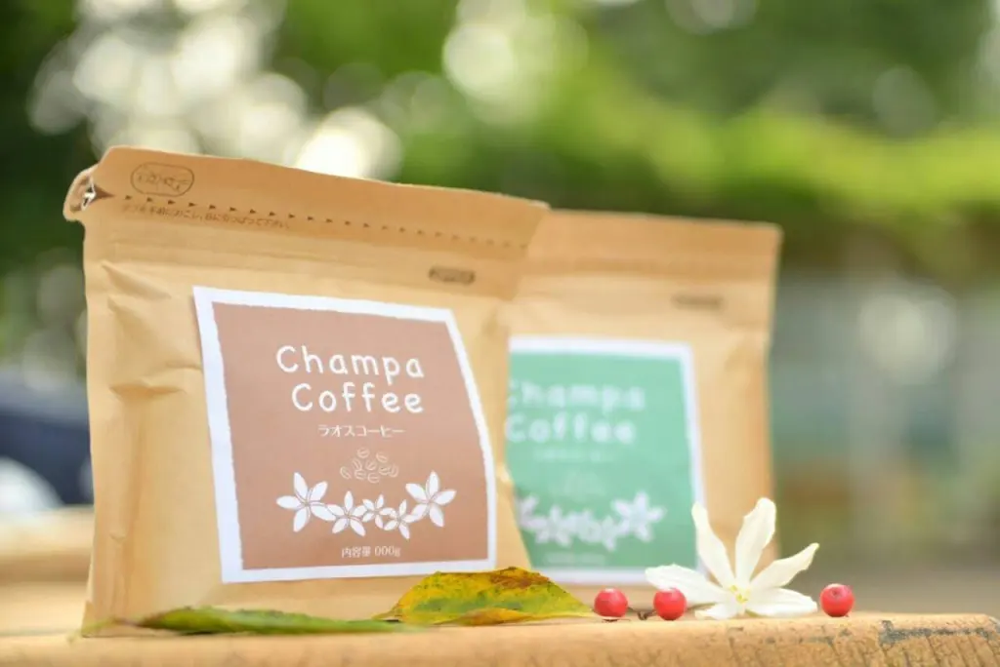
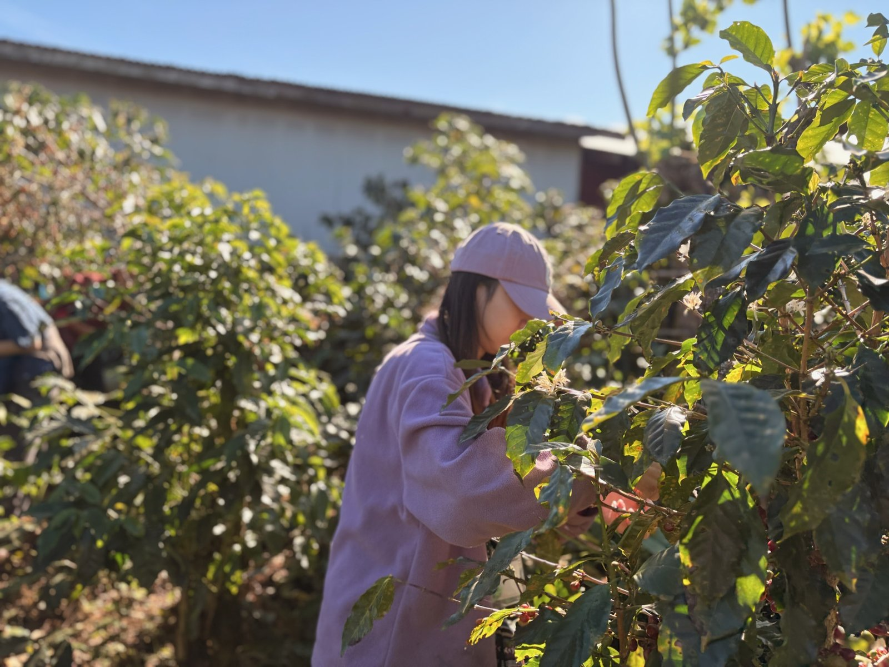
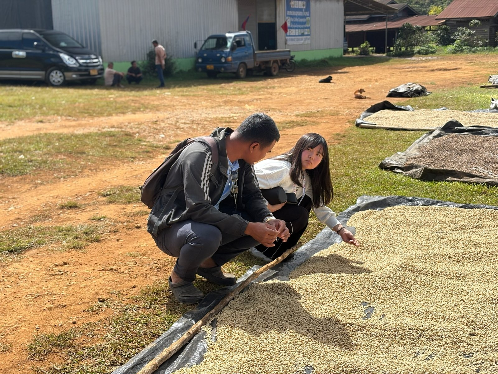

国内焙煎・新鮮さへのこだわり
エフラオのコーヒー豆は日本国内で焙煎しており、 販売時には焙煎から1か月以内の新鮮な豆のみを使用しています。
新鮮な豆だからこそ、香りがしっかり立ち、ピーベリーならではのすっきりとした味わいを感じていただけます。
COFFEE
エフラオでは、ATJを通じて、ラオス・パクソン近郊の農家さんが育てたフェアトレードのコーヒー豆を仕入れ、 学生がパッケージデザインや商品企画を行っています。ドリップパックや豆の販売を通して、 ラオスの魅力や農家さんのこだわりをキャンパス内外に伝えています。

飲み方や気分に合わせて、2つの焙煎度から選んで楽しんでいただけます。
酸味とコクのバランスがよく、後味はすっきり。
ホットコーヒーで、華やかな香りを楽しみたい方におすすめです。
サンドウィッチなどによく合い、お昼の休憩のお供に最適な一杯です。
しっかりとしたコクと香ばしさがあり、ミルクとも相性◎。
アイスコーヒーや、濃いめの味わいが好きな方にぴったりです。
ケーキなどの甘いスイーツによく合いティータイムのお供に最適な一杯です。
最大の特徴は、希少なピーベリー（丸豆）を100％使用していることです。通常のコーヒーチェリーは 1つの実の中に2つの豆が入っていますが、ピーベリーはごく稀に1粒だけが育つ丸い豆で、 全収穫量のうちわずか数％ほどしか採れません。
形が丸く熱が均一に入りやすいため、雑味が少なく、香りが立ち、クリアな味わいが楽しめます。
通常1つの実に2つ入るところ、1粒だけが育つ特別な豆。収穫量のわずか5%ほど。
形が丸く均一に熱が入りやすいため、雑味が少なくクリアで上品な味になります。
丸豆特有の華やかな香り立ちを感じられます。

エフラオのコーヒー豆は日本国内で焙煎しており、 販売時には焙煎から1か月以内の新鮮な豆のみを使用しています。
新鮮な豆だからこそ、香りがしっかり立ち、ピーベリーならではのすっきりとした味わいを感じていただけます。
アラビカ種の豆を主体としたエフラオのコーヒーは、 香りが豊かで、苦味が穏やかなのが特徴です。
ナッツやチョコレートを思わせる香ばしさと、ほんのり酸味。すっきりとした後味で、 「コーヒーがあまり得意ではない」という方からも「飲みやすい」と好評です。

毎年５月に代々木公園で開催されるラオスに関係する団体が出店するラオスフェスティバルでも出店し、 お客さんとの交流のほか、ラオスに関係する団体との対話を設けることでメンバーの知識を深め、新たな視点からの気づきを得ることができます。
学内販売会は年4回開催し、学生や教職員の方々にコーヒーを紹介しています。2026年度は4月30日〜5月1日、7月15日・16日、10月14日・15日に開催し、3回とも完売しました。
コーヒーの背景や支援の仕組みをポップやトークで伝えることで、「買って終わり」ではない
関わり方を大切にしています。
学内販売会の活動報告を見る
東洋大学の白山祭では、コーヒー販売ブースと活動紹介ブースを出展しています。白山祭では普段は行っていないドリンクの販売も行っています。 また、文京シビックセンターなどの学外イベントにも出店し、 より多くの人にラオスコーヒーを知ってもらう機会をつくっています。
コーヒーの売上の一部は、ラオスの子どもたちの教育環境を整えるための支援に使われます。 これまでには職業図鑑の制作・寄贈、学校設備の整備などに充ててきました。 「おいしい一杯」が、ラオスの子どもたちの学びにつながる仕組みを目指しています。
活動への参加や、コーヒー販売のご相談はこちらから。